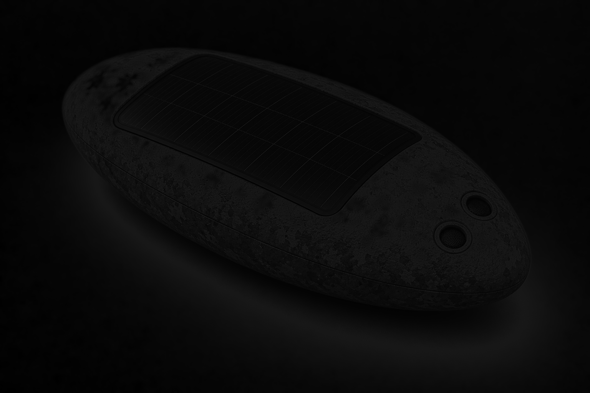

Core capsules
Low-cost nodes collect environmental, acoustic, vibration, battery, solar and radio-health data.

Attrition tolerant by design
SENTIO combines low-cost sensing capsules, deployable gateways and software-defined intelligence modules to create rapid situational awareness in remote, unsafe or under-instrumented environments.
Deployment planner
SENTIO treats node loss as an expected operating condition. This public planner gives a high-level estimate of capsule count, coverage density and planned redeployment buffer before running a full SENTIO v0 simulation.
Run full simulationAt 100 m spacing, each capsule represents approximately 1.00 ha of nominal coverage.
System
SENTIO is designed around coverage, redundancy and field realism. Capsules collect compact telemetry. Gateways forward packets. The software layer interprets distributed evidence.
Low-cost nodes collect environmental, acoustic, vibration, battery, solar and radio-health data.
A gateway receives capsule packets and forwards them through LTE, Ethernet or later satellite backhaul.
The backend stores telemetry, tracks node health, maps pods and calculates operational confidence.
Different software modules interpret the same physical telemetry for different missions.
Design principle
SENTIO does not depend on every capsule surviving, charging, transmitting or being recovered. Individual capsules can be lost, shaded, blocked, damaged or offline without the entire network failing.
Intelligence
A single capsule anomaly is weak evidence. SENTIO becomes stronger when multiple nearby capsules and multiple sensor types point toward the same event.
Heat rise, humidity drop, VOC shift, acoustic disturbance and local agreement.
Air-pattern anomalies, pressure and humidity context, spatial clustering.
Human-activity awareness and search-area prioritisation without person identification claims.
Vibration, movement and environmental stress trends for remote assets.
SENTIO v0
SENTIO v0 demonstrates the live dashboard, simulated capsule network, expected node loss, River and scikit-learn anomaly scoring, network confidence, explainable alerts and exportable evidence.
Validation path